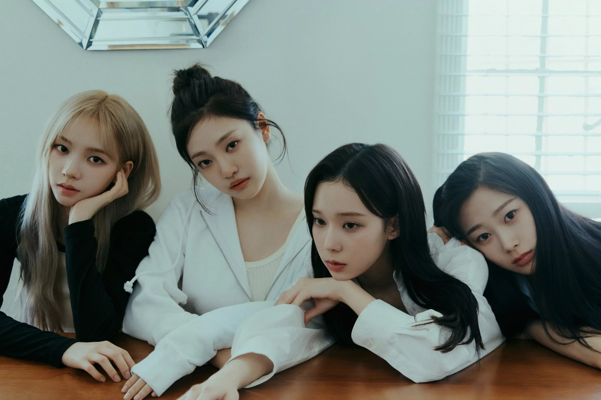

Aespa estreou em 17 de novembro de 2020, com o single "Black Mamba", que alcançou o maior número de visualizações em 24 horas para o vídeo de estreia de um grupo de K-pop. O grupo é composto por quatro integrantes: Karina, Winter, Giselle e Ningning. O grupo é conhecido por popularizar o conceito de metaverso e o gênero hyperpop no K-pop.
conhecida profissionalmente como Karina é uma cantora, rapper, compositora, apresentadora de TV, modelo, atriz e dançarina sul-coreana. Ela é líder do girl group sul-coreano aespa, formado pela gravadora SM Entertainment em 17 de novembro de 2020. Ela também é integrante do supergrupo Got the Beat, que estreou em 3 de janeiro de 2022. Em 2024, Karina alcançou seu primeiro top-dez músicas como artista solo no Circle Digital Chart. Karina ganhou o seu primeiro prêmio no programa músical Show! Music Core com a canção "UP", ela ganhou o prêmio antes da sua estréia oficial como artista solo. A música foi primeiramente apresentada em julho na tour Synk: Parallel Line, a música logo se tornou viral com vários artistas fazendo covers da música. Karina nasceu e foi criada em Suwon, Província de Gyeonggi, Coreia do Sul, em uma família composta por seus pais e uma irmã mais velha. Ela frequentou a Hansol High School até ser descoberta por um caçador de talentos da SM nas redes sociais. Ela então desistiu para se concentrar no treinamento e mais tarde obteve um certificado equivalente a GED.
Kim Min-jeong nasceu em 1 de janeiro de 2001, em Nampo-dong, Busan, Coreia do Sul,[2][3][4] mas passou a infância em Yangsan, Gyeongsang do Sul.[5] Ela nasceu em uma família militar com seu pai, irmão mais velho e vários parentes, todos militares. Devido a isso, ela inicialmente sonhava em se tornar um soldado.
Giselle nasceu em Gangnam-gu, Seul, Coreia do Sul, filha de mãe coreana e pai japonês, e cresceu em Tóquio, Japão. Ela é fluente em japonês, coreano e inglês.Giselle nasceu em Gangnam-gu, Seul, Coreia do Sul, filha de mãe coreana e pai japonês, e cresceu em Tóquio, Japão.[4] Ela é fluente em japonês, coreano e inglês.Ela frequentou a Escola Internacional de Tóquio e a Escola Internacional do Sagrado Coração,onde foi apresentada ao K-pop em seu segundo ano do ensino médio. Mais tarde, ela retornou à Coreia após a formatura para fazer um teste para a SM Entertainment e passou nas audições de sábado
Ningning nasceu como Ning Yizhuo em 23 de outubro de 2002, em Harbin, China. Ela frequentou a Harbin Normal University Middle Schoole a Beijing Contemporary Music Academy, graduando-se em ambas. vNingning foi observada pela SM Entertainment após sua aparição no programa de TV chinês Let's Sing Kids. Mais tarde, ela foi apresentada como membro da equipe de treinamento de pré-estreia SM Rookies em 19 de setembro de 2016. Como parte da equipe, ela apareceu no segmento Rookies Princess: Who's the Best? do programa My SMT naquele ano, e gravou vários covers para o programa de TV animado coreano Shining Star em 2017.